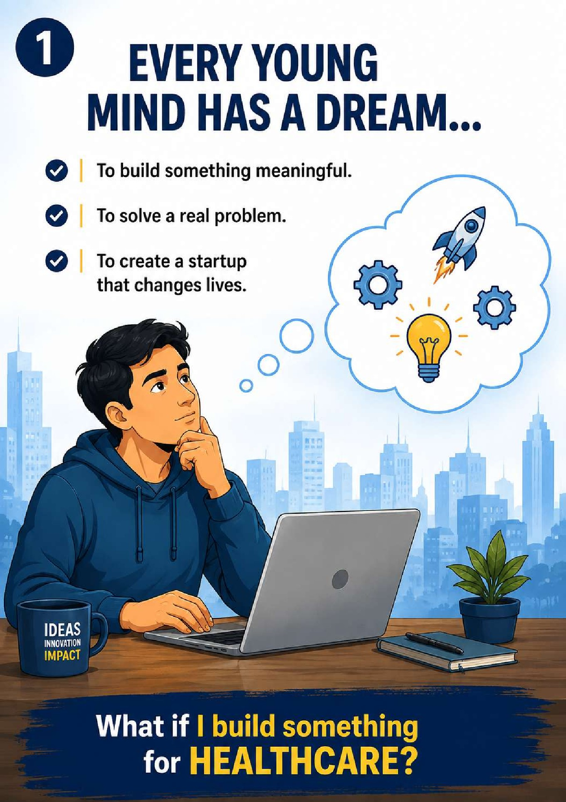
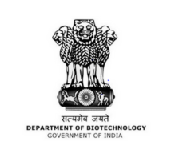
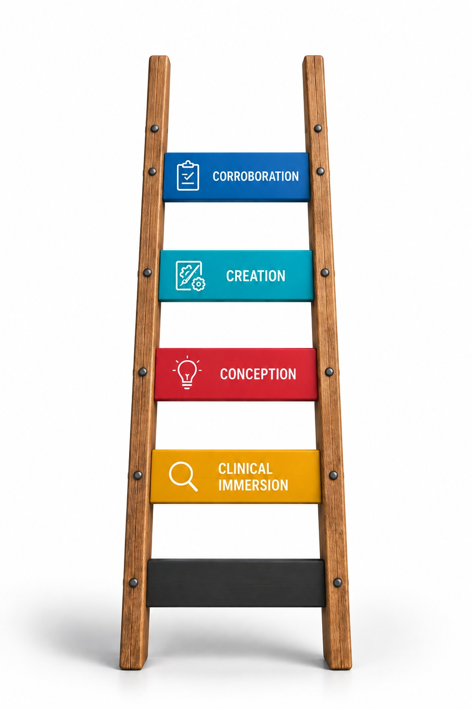
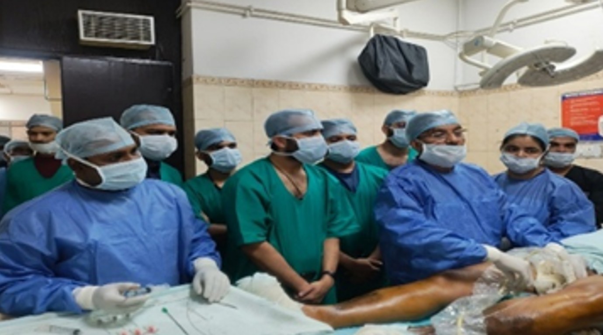
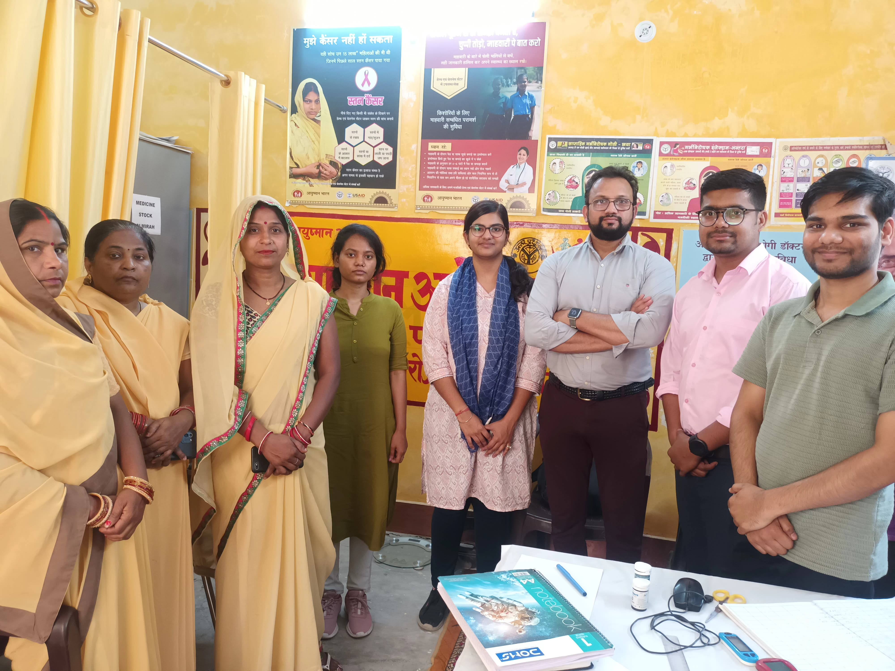
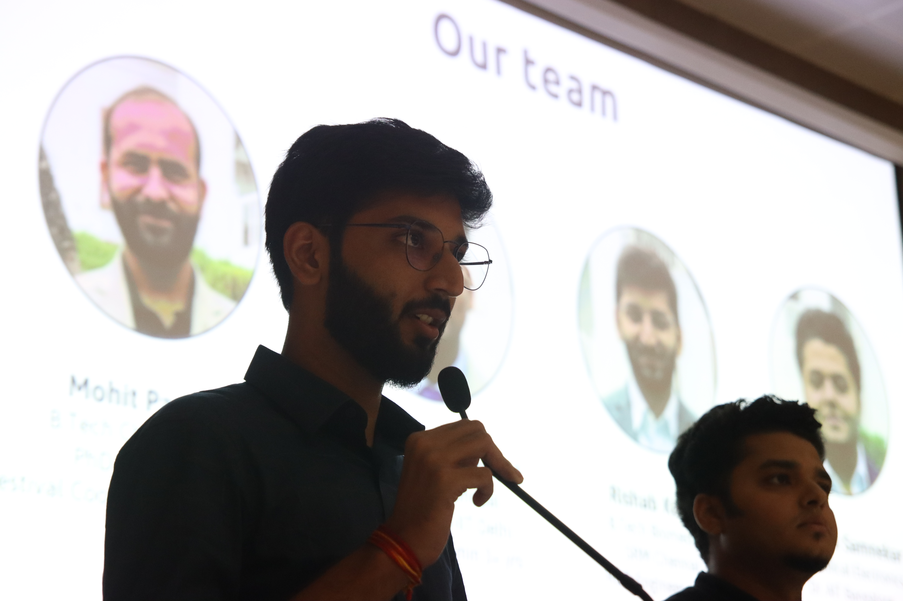

School of International Biodesign (SIB-SHInE) is an intensive year-long residential fellowship empowering clinicians, engineers, and designers to identify unmet clinical needs and invent indigenous biomedical innovations.

DBT GOVT. OF INDIASchool of International Biodesign - Synergising Healthcare Innovation and Entrepreneurship (SIB-SHInE) is an exciting year-long full-time dedicated residential fellowship jointly led by King George’s Medical University (KGMU) Lucknow and IIT Kanpur, sponsored by the Department of Biotechnology (DBT), Government of India.
The program serves as an elite springboard for launching and accelerating a career in health technology and biomedical device innovation. By assembling interdisciplinary cohorts of doctors, engineers, and designers, SIB-SHInE guides fellows through need discovery directly in clinical wards to indigenous prototype manufacturing.
Our combined vision is to establish a world-class innovation ecosystem in India that builds disruptive, accessible, and high-impact medical technologies.
The fellowship is architected around the globally proven 4Cs framework: Clinical Immersion, Conception, Creation, and Corroboration.
Fellows follow a disciplined, four-stage development process that forms the cornerstone of their entrepreneurial journey. This gives fellows an in-depth understanding of biomedical product development—from the identification of clinical opportunities to the initiation and funding of a new venture.

Comprehensive financial, technical, and venture support to transform high-potential ideas into sustainable MedTech enterprises.
A competitive monthly fellowship stipend of ₹60,000/month for 12 months, coupled with full co-ownership in the intellectual property and patents filed during the program.
Hands-on product development experience with access to seed grants, SIIC IIT Kanpur incubation support, investor pitch sessions, and regulatory pathways to launch your company.
Connect directly with leading clinicians, biomedical engineers, serial entrepreneurs, and Biodesign faculty across India.
India's top clinical campus and its finest engineering institute — powered by the national agency funding it all.
Established in 1911, King George’s Medical University is one of India's largest and most prestigious medical centers, offering an unmatched clinical immersion ground for identifying genuine unmet clinical needs.
An Institute of National Importance established in 1959, IIT Kanpur provides state-of-the-art engineering prototyping labs, bio-incubators, and interdisciplinary faculty to solve complex clinical problems.
The Department of Biotechnology (DBT), Ministry of Science & Technology, fully sponsors the fellowship — stipend, prototyping grants, and venture pathways.
Perspectives on bridging the knowledge gap between clinical practice and cutting-edge engineering.
This fellowship is critical in accelerating MedTech innovation in India. It will support talented innovators in building indigenous, low-cost medical technologies to serve our healthcare system.

The SIB-SHInE program by KGMU and IIT Kanpur will bridge the knowledge gap between clinicians and engineers. It can potentially change the way medical devices are introduced in our hospitals.

From high-stakes emergency wards and clinical bootcamps to prototyping laboratories and national investor pitch stages.




We welcome high-aptitude graduates and postgraduates passionate about healthcare entrepreneurship.
Graduate or postgraduate degrees in Medicine (MBBS/MD/BDS), Engineering, Biomedical Instrumentation, Industrial Design, or MBA.
Full-time residential commitment for 12 months with travel across KGMU Lucknow, IIT Kanpur, and partner institutions.
Applicants should be between 20 and 35 years of age at the time of fellowship application.
Frugal mindset, aptitude for invention, leadership, and a commitment to launching new medical device start-ups.
Interviews were successfully conducted on 03 September 2026 and selection results have been declared. Selected innovators are entering our immersive Biodesign corridor across KGMU Lucknow & IIT Kanpur.